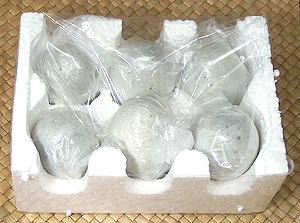

Preserved eggs are most commonly duck eggs but chicken eggs and quail eggs can also be used, but those available in North America are duck eggs, The duck eggs used are about the size of A U.S. jumbo size chicken eggs at around 2-1/4 ounces each.
Preserved eggs are available in markets serving East and Southeast Asian communities, generally individually wrapped and packed 6 pieces to a styrofoam block. In times long past (1960s) they were shipped packed in rice straw in huge glazed clay pots which, once empty, were sold at high prices in Chinatown art stores.
Eggs were traditionally preserved by coating with an alkaline slurry and allowing them to age for three months to a year. Various mixes of alkaline clay, ashes, quicklime and other materials have been used. Today commercial eggs are made using lye or sodium carbonate mixed with tea, salt and other materials. In China highly toxic lead oxide is sometimes used to speed the process, and other heavy metals have also been used, none of which are allowed in North America. As of 2016, things are still not under control in China, so make sure the preserved eggs you buy are from Taiwan.
The process converts the whites into a stiff gel, transparent and dark amber in color. The yolks are turned blue-green, jelly like on the outside and gooey at the center with a distinct sulphur / ammonia aroma. The shells remain nearly white with a light blue-gray tint.
More on Eggs.

These have often showed up on "most disgusting foods" discussions, but I recently served them at a party where no-one recognized them. They were very much liked, and a half dozen quartered eggs were quickly consumed. People asked where they could get them. Many Americans have eaten preserved egg without realizing it - it's the mysterious stiff dark translucent gel in the center of flaky buns sold in Chinese bakeries.
Buying: These are available in almost any market serving an East or Southeast Asian community. Caution: always check the package to see it is from Taiwan, "Taiwan Style" may not be enough. Heavy metals and other shady techniques to shorten processing time are still being used in mainland China (2016).
Cooking: These aren't generally cooked, though they may be included in some baked goods. You shell them and eat them.
Serving: My favorite way of serving is to set a tiny bowl in the center of a plate. I put sushi ginger (pink pickled ginger) in the bowl and arrange egg quarters around it.
da_dukprz 161030 - www.clovegarden.com